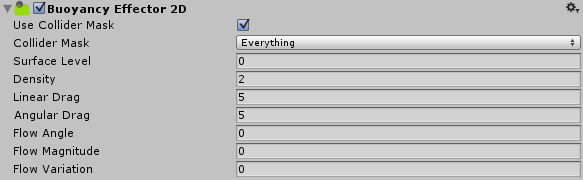

Buoyancy Effector 2D
The Buoyancy Effector 2D defines simple fluid behaviour such as floating and the drag and flow of fluid. You can also control a fluid surface, with the fluid behaviour taking place below.

Properties
| Property: | Function: |
|---|---|
| Use Collider Mask | Check this box to enable the 'Collider Mask' property. If this is not enabled, the Global Collision Matrix will be used as the default for all Collider 2Ds. |
| Collider Mask | The mask used to select specific Layers allowed to interact with the effector. Note that this option only displays if you have selected Use Collider Mask. |
| Surface Level | Defines the surface location of the buoyancy fluid. When a GameObject is above this line, no buoyancy forces are applied. When a GameObject is intersecting or completely below this line, buoyancy forces are applied. This is a location specified as a world-space offset along the world y-axis, but is also scaled by the GameObject's Transform component. |
| Density | The density of the Buoyancy Effector 2D fluid. This affects the behaviour of Collider 2Ds: Those with a higher density sink, those with a lower density float, and those with the same density appear suspended in the fluid. |
| Linear Drag | The drag coefficient affecting positional movement of a GameObject. This only applies when inside the fluid. |
| Angular Drag | The drag coefficient affecting rotational movement of a GameObject. This only applies when inside the fluid. |
| Flow Angle | The world-space angle (in degrees) for the direction of fluid flow. Fluid flow applies buoyancy forces in the specified direction. |
| Flow Magnitude | The "power" of the fluid flow force. Combined with Fluid Angle, this specifies the level of buoyancy force applied to GameObjects inside the fluid. The magnitude can also be negative, in which case the buoyancy forces are applied at 180 degrees to the Flow Angle. |
| Flow Variation | Enter a value here to randomly vary the fluid forces. Specify a positive or negative variation to randomly add or subtract from the Fluid Magnitude. |